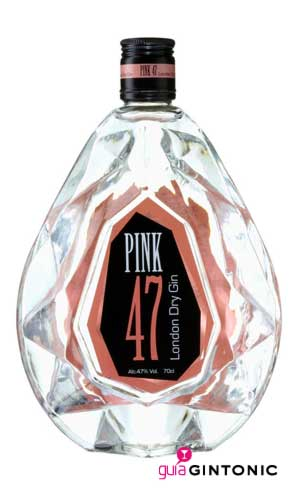

Pink 47 gin, es una ginebra de importación del Reino Unido, que a dia de hoy ya ha recibido una veintena de premios. Es una ginebra sorprendente y con un envase muy original y diferente a todo lo que se parezca a una botella, ya que se parece mucho al legendario Diamante Rosa Khavarya.
Pink 47 es una ginebra con una calidad extraordinária y que cuenta con 12 botánicos que provienen de todos los rincones del mundo: piel de naranja y de limón de España, enebro de la Toscana, cilantro de Marruecos, regaliz de China, almendras españolas, nuez moscada de África oriental, etc.
Estos botánicos proporcionan a esta ginebra un sabor seco muy destacable y un sabor suave en boca. Es una ginebra ideal tanto para preparar gin tonic como para base de cócteles gracias a su alta graduación, 47%.